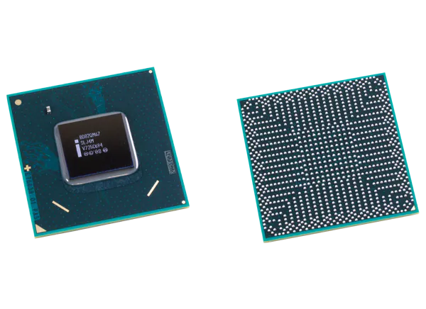
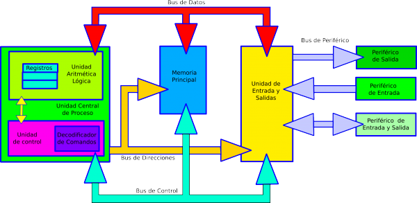

3.1 CHIPSET
El "chipset" es el conjunto (set) de chips que se encargan de controlar determinadas funciones del ordenador, como la forma en que interacciona el microprocesador con la memoria o la caché, o el control de los puertos y slots ISA, PCI, AGP, USB...
Antiguamente estas funciones eran relativamente sencillas de realizar y el chipset apenas influía en el rendimiento del ordenador, por lo que el chipset era el último elemento al que se concedía importancia a la hora de comprar una placa base, si es que alguien se molestaba siquiera en informarse sobre la naturaleza del mismo. Pero los nuevos y muy complejos micros, junto con un muy amplio abanico de tecnologías en materia de memorias, caché y periféricos que aparecen y desaparecen casi de mes en mes, han hecho que la importancia del chipset crezca enormemente.
De la calidad y características del chipset dependerán:
- Obtener o no el máximo rendimiento del microprocesador.
- Las posibilidades de actualización del ordenador.
- El uso de ciertas tecnologías más avanzadas de memorias y periféricos.
3.1.1 UNIDAD CENTRAL DE PROCESAMIENTO (CPU)
La unidad central de procesamiento (siglas en inglés Central Processing Unit) es el hardware dentro de una computadora u otros dispositivos programables. Su trabajo es interpretar las instrucciones de un programa informático mediante la realización de las operaciones básicas aritméticas, lógicas y externas (provenientes de la unidad de entrada/salida). Su diseño y avance ha variado notablemente desde su creación, aumentando su eficiencia y potencia, y reduciendo aspectos como el consumo de energía y el costo.
Los componentes de la CPU son:
3.1.2 CONTROLADOR DEL BUS
El controlador del bus se encarga de la frecuencia de funcionamiento y las señales de sincronismo, temporización y control. Está ubicado en un chip en la placa base.
El bus es la vía a través de la que se van a transmitir y recibir todas las comunicaciones, tanto internas como externas, del sistema informático. El bus es solamente un dispositivo de transferencia de información entre los componentes conectados a él, no almacena información alguna en ningún momento. Los datos, en forma de señal eléctrica, sólo permanecen en el bus el tiempo que necesitan en recorrer la distancia entre los dos componentes implicados en la transferencia.
3.1.3 PUERTAS DE ENTRADA SALIDA E/S
Un puerto de E/S es un enchufe en una computadora al que se conecta un cable. El puerto conecta la CPU a un dispositivo periférico a través de una interfaz de hardware o a la red a través de una interfaz de red.
En otras palabras, un puerto de E/S es un punto de conexión que actúa como interfaz entre la computadora y dispositivos externos como mouse, impresora, módem, etc.
Estos son de dos tipos:
- Puerto interno: Conecta la placa base a dispositivos internos como unidad de disco duro, unidad de CD, módem interno, etc.
- Puerto externo: Conecta la placa base a dispositivos externos como módem, mouse, impresora, unidades flash, etc.
Tipos de puertos:
- Puerto serial: Los puertos seriales transmiten datos secuencialmente un bit a la vez. Por lo tanto, solo necesitan un cable para transmitir 8 bits. Sin embargo, también los hace más lentos. Los puertos serie suelen ser conectores macho de 9 o 25 pines. También se conocen como puertos COM (comunicación) o puertos RS323C.
- Puerto USB: USB son las siglas de Universal Serial Bus. Es el estándar de la industria para la conexión de datos digitales de corta distancia. El puerto USB es un puerto estandarizado para conectar una variedad de dispositivos como impresora, cámara, teclado, altavoz, etc.
- Puerto PS/2: PS/2 son las siglas de Personal System/2. Es un puerto estándar hembra de 6 pines que se conecta al cable mini-DIN macho. IBM introdujo PS/2 para conectar el mouse y el teclado a las computadoras personales. Este puerto ahora está casi obsoleto, aunque algunos sistemas compatibles con IBM pueden tener este puerto.
- Puerto de infrarrojos: El puerto de infrarrojos es un puerto que permite el intercambio inalámbrico de datos en un radio de 10 m. Dos dispositivos que tienen puertos infrarrojos se colocan uno frente al otro para que los haces de luces infrarrojas se puedan utilizar para compartir datos.
- Puerto Bluetooth: Bluetooth es una especificación de telecomunicaciones que facilita la conexión inalámbrica entre teléfonos, computadoras y otros dispositivos digitales a través de una conexión inalámbrica de corto alcance. El puerto Bluetooth permite la sincronización entre dispositivos habilitados para Bluetooth.
- Puerto FireWire: FireWire es el estándar de interfaz de Apple Computer para permitir la comunicación de alta velocidad mediante bus serie. También se llama IEEE 1394 y se usa principalmente para dispositivos de audio y video como videocámaras digitales.
3.1.4 CONTROLADOR DE INTERRUPTORES
Las interrupciones del PC, a las que nos referimos más detenidamente en el epígrafe correspondiente (H2.4), son manejadas por un chip conocido como PIC ("Programmable Interrupt Controller").
Originariamente era un 8259A, que puede manejar 8 peticiones de interrupción, pero pronto se hizo evidente que eran un número excesivamente corto, por lo que en 1984, IBM añadió un segundo controlador en el modelo AT. Este diseño, con dos controladores, ha permanecido invariable hasta nuestros días en lo que se refiere a su funcionalidad. Recientemente ha sido sustituido por el denominado APIC ("Advanced Programmable Interrupt Controller") en las máquinas Pentium y sucesoras, que está basado en un chip 82489DX.
3.1.5 CONTROLADOR DE ACCESO DIRECTO A MEMORIA (DMA)
DMA es el acrónimo de "Direct Memory Access" se trata de un mecanismo incluido en la arquitectura del PC, que permite intercambios de datos entre la memoria y ciertos dispositivos sin intervención del procesador (por esta razón se denomina precisamente acceso directo a memoria); está controlado por un chip específico, el DMAC("DMA Controller"). En los XT estaba integrado en un chip 8237A que proporcionaba 4 canales. Posteriormente en los AT se instalaron dos, ampliándose a 8 el número de canales. En el epígrafe dedicado al Acceso directo a memoria (H2.3), se expone con más detalle su funcionamiento.
3.1.6 CIRCUITOS DE TEMPORIZACION
El circuito electrónico que más se utiliza tanto en la industria como en circuitería comercial, es el circuito temporizador o de retardo, dentro de la categoría de temporizadores, cabe destacar el más económico y también menos preciso consistente en una resistencia y un condensador, a partir de aquí se puede contar con un sinfín de opciones.
Un temporizador básicamente consiste en un elemento que se activa o desactiva después de un tiempo preestablecido. De esta manera podemos determinar el parámetro relacionado con el tiempo que ha de transcurrir para que el circuito susceptible de temporizarse, se detenga o empiece a funcionar o simplemente cierre un contacto o lo abra.
Se encuentra en la placa base de la PC y que es capaz de mantener una cuenta de tiempo basada en el reloj de la computadora. Puede usarse para calcular el intervalo entre dos mediciones de tiempo o para generar pausas. Este chip tiene la capacidad de realizar diferentes funciones de conteo. Es útil para medir el tiempo que dura cierto proceso o para mantener actualizadas la hora del día y la fecha si se deja la PC conectada y encendida.
3.1.7 CIRCUITOS DE CONTROL
Es una red secuencial que acepta un código que define la operación que se va a ejecutar y luego prosigue a través de una secuencia de estados, generando una correspondiente secuencia de señales control.
Estas señales de control incluyen el control de lectura-escritura y señales de dirección de memoria válida en el bus de control del sistema. Otras señales generadas por el controlador se conectan a la ALU y a los registros internos del procesador para regular el flujo de información en el procesador y desde los buses de dirección y de datos del sistema.
3.1.8 CONTROLADORES DE VIDEO
La tarjeta de video, (también llamada controlador de video), es un componente electrónico requerido para generar una señal de video que se manda a una pantalla de video por medio de un cable. La tarjeta de video se encuentra normalmente en la placa de sistema de la computadora o en una placa de expansión. La tarjeta gráfica reúne toda la información que debe visualizarse en pantalla y actúa como interfaz entre el procesador y el monitor; la información es enviada a éste por la placa luego de haberla recibido a través del sistema de buses.
Una tarjeta gráfica se compone, básicamente, de un controlador de video, de la memoria de pantalla o RAM video, y el generador de caracteres, y en la actualidad también poseen un acelerador de gráficos. El controlador de video va leyendo a intervalos la información almacenada en la RAM video y la transfiere al monitor en forma de señal de video; el número de veces por segundo que el contenido de la RAM video es leído y transmitido al monitor en forma de señal de video se conoce como frecuencia de refresco de la pantalla.
3.2 APLICACIONES
El Chipset es el que hace posible que la placa base funcione como eje del sistema, dando soporte a varios componentes e interconectándolos de forma que se comuniquen entre ellos haciendo uso de diversos buses. Es uno de los pocos elementos que tiene conexión directa con el procesador, gestiona la mayor parte de la información que entra y sale por el bus principal del procesador, del sistema de vídeo y muchas veces de la memoria RAM. En el caso de los computadores PC, es un esquema de arquitectura abierta que establece modularidad: el Chipset debe tener interfaces estándar para los demás dispositivos. Esto permite escoger entre varios dispositivos estándar, por ejemplo en el caso de los buses de expansión, algunas tarjetas madre pueden tener bus PCI-Express y soportar diversos tipos de tarjetas de distintos anchos de bus (1x, 8x, 16x).
En el caso de equipos portátiles o de marca, el chipset puede ser diseñado a la medida y aunque no soporte gran variedad de tecnologías, presentará alguna interfaz de dispositivo.
3.2.1 ENTRADA/SALIDA
El papel que juegan los dispositivos periféricos de la computadora es esencial; sin tales dispositivos ésta no sería totalmente útil. A través de los dispositivos periféricos podemos introducir a la computadora datos que nos sea útiles para la resolución de algún problema y por consiguiente obtener el resultado de dichas operaciones, es decir; poder comunicarnos con la computadora.
La computadora necesita de entradas para poder generar salidas y éstas se dan a través de dos tipos de dispositivos periféricos existentes:
- Dispositivos periféricos de entrada: Los periféricos de entrada son aquellos que se utilizan para proporcionar datos y señales a la unidad de procesamiento. Suele hacerse una clasificación de acuerdo a la modalidad de entrada, o bien de acuerdo a si la entrada tiene carácter discreto o continuo. Algunos de ellos son, el teclado, mouse, escáner, cámara web, micrófono y lector de CD/DVD.
- Dispositivos periféricos de salida: Son capaces de reproducir lo que ocurre en la computadora para el interés del usuario. La CPU genera patrones de bits internos, y son estos dispositivos los encargados de hacerlos comprensibles para el usuario. Algunos de estos son, el monitor, impresora, auriculares, tarjeta de sonido y tarjeta de voz.
3.2.2 ALMACENAMIENTO
Una parte fundamental del ordenador, es su capacidad para almacenar datos. Todos los ordenadores incluyen o pueden hacer uso diferentes sistemas de almacenamiento como microchips, la memoria RAM, el disco duro, los dispositivos portátiles, etc.
Un dispositivo de almacenamiento tiene la función de retener datos informáticos durante un intervalo de tiempo. Estos han ido evolucionando a lo largo de la historia con el objetivo de crear un dispositivo lo más pequeño posible (físicamente) y con más capacidad para almacenar y tratar datos.
Nos encontramos con dos tipos de sistemas: el almacenamiento primario o principal y el almacenamiento secundario. Con el primer tipo nos referimos a los dispositivos de almacenamiento masivo, entre sus características principales destaca que siempre que el ordenador reciba energía eléctrica la información es guardada en la memoria del ordenador, en caso contrario, esta se pierde. Con el segundo tipo nos referimos a los dispositivos de almacenamiento secuencial, es decir, almacena la información hasta que el usuario lo requiere, para lo que necesita dispositivos externos de almacenamiento, que tienen menor capacidad que la memoria primaria, por lo que son mucho más lentos.
3.2.3 FUENTES DE ALIMENTACION
Es un transformador rectificador a 220 V. Transformador porque pasa de 220 V a 5 y 12 V, y rectificador porque transforma corriente alterna (AC) en continua (DC). Es una caja grande de la que salen cables. Tiene un refrigerador que refrigera la unidad central.
La fuente de alimentación es el dispositivo que se encarga de distribuir la energía a todos los componentes internos de la computadora. Tiene un ventilador propio que la mantiene fresca a ella misma como a todas demás partes de la computadora. Además, la fuente puede operar un ventilador auxiliar ubicado en cualquier otra parte de la computadora. Las fuentes están clasificadas por su potencia en watts, que hablando fácil se trata de la cantidad de energía eléctrica que pueden entregar a todo el sistema.
El negocio de proveer servicios de datos es mucho más complejo que la forma en la que se dan los tradicionales servicios, que con frecuencia se terminan involucrando o necesitando la colaboración de terceras empresas.
- Desarrollo de nuevos mercados y productos
- Adquisición y administración de clientes
- Proveer y desarrollar servicios para la red
- Administración del negocio
3.3.1 NEGOCIOS
Definitivamente, la tecnología en general ha sido la causa principal y la acción más directa para la transformación del trabajo de las organizaciones en la posguerra del siglo XX. Tanto los bienes de capital «duros» (computadores, teléfonos, videos, facsímiles, grabadoras, etc.), como los programas y sistemas de información y comunicación en general, han incrementado enormemente la productividad y eficiencia de las organizaciones. Tenemos como ejemplos los siguientes: bases de datos en redes de todo orden y topología, sistemas de reservaciones en aerolíneas, sistemas de contabilidad y nóminas, archivos clínicos en centros de salud, sistemas de conmutación electrónica y un sin número de otras aplicaciones a procesos administrativos.
3.3.2 INDUSTRIA
La industrialización de los servicios de tecnología de información va a redefinir el mercado en términos de como las organizaciones evalúan, compran y seleccionan los servicios y como los vendedores desarrollan y establecen precios de los servicios. Para lograr esta estandarización, se requiere un enfoque hacia las soluciones genéricas y esto debe ser responsabilidad de los proveedores, que deben de desarrollar, operar y administrar el resultado de estos genéricos de TI. Aunque los servicios de TI están en proceso de madurez, la madurez de la industria se ha incrementado en aspectos evidentes, como la forma en que los servicios son implementados y administrados.
3.3.3 COMERCIO ELECTRONICO
El desarrollo de estas tecnologías y de las telecomunicaciones ha hecho que los intercambios de datos crezcan a niveles extraordinarios, simplificándose cada vez más y creando nuevas formas de comercio, y en este marco se desarrolla el Comercio Electrónico. Se considera “Comercio Electrónico” al conjunto de aquellas transacciones comerciales y financieras realizadas a través del procesamiento y la transmisión de información, incluyendo texto, sonido e imagen.